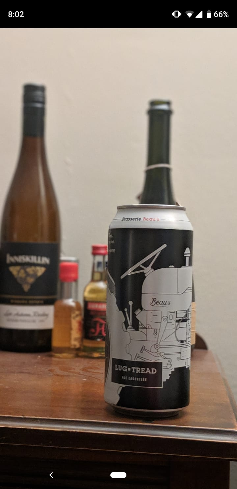
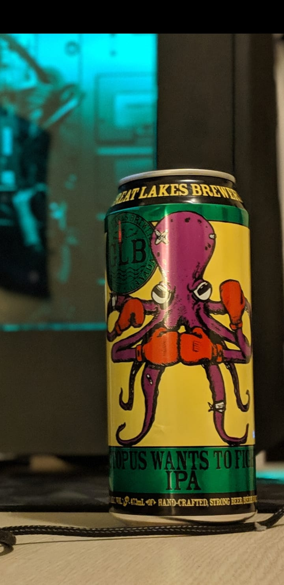

<nav class="sidebar sidebar-offcanvas" id="sidebar">
  <ul class="nav">
    <li class="nav-item">
      <a class="nav-link" [routerLink]="['/dashboard', '../../assets/beerpics/octopus.jpeg']" routerLinkActive="active">
       
      </a>
    </li>
    <li class="nav-item">
      <a class="nav-link" [routerLink]="['/dashboard', '../../assets/beerpics/lug-tread.jpeg']" routerLinkActive="active">
        
      </a>
    </li>
    <li class="nav-item">
      <a class="nav-link" [routerLink]="['/dashboard', '../../assets/beerpics/octopus.jpeg']" routerLinkActive="active">
        
      </a>
    </li>
  </ul>
</nav>
